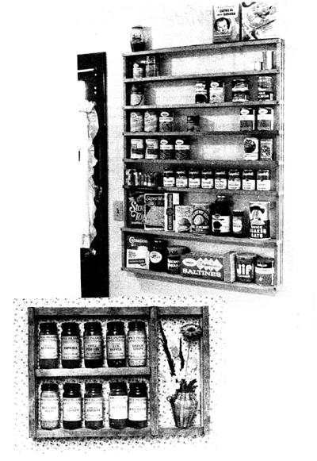

ABOVE: Strong and trim, this handsome wall rack holds more than 40 cans, jars, bottles, and boxes in an unused space between a door and a window. Note the extra width on the two bottom shelves. LEFT. A charming spice rack with lots of room for tall jars and a dried flower arrangement.